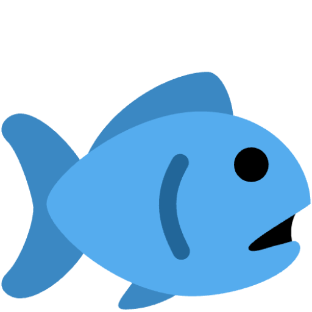

 Attention Sinks and Outlier Features:
A ‘Catch, Tag, and Release’ Mechanism for Embeddings
Stephen Zhang
1,2,*
,
Mustafa Khan
1,2,*
,
Vardan Papyan
1,2
1
University of Toronto,
2
Vector Institute
*
Denotes Equal Contribution
arXiv
We're reeling in the final touches 🎣. Dive back later!